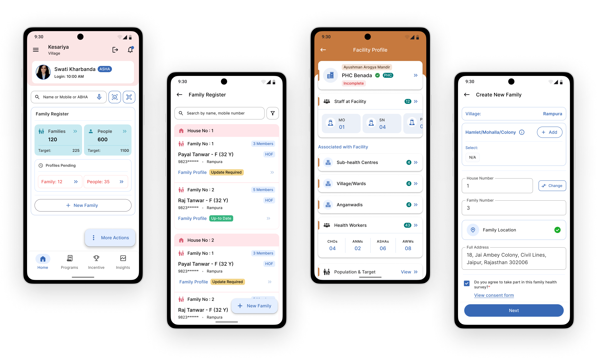

An Application for Govt. of Maharashtra
The app for ASHA workers simplifies data collection for the Digital Health Survey (DHS). It features easy navigation, offline functionality, real-time data sync, and error validation. ASHA workers can efficiently collect health and demographic data, with reminders and progress tracking to ensure accurate survey completion. The app empowers ASHA workers to streamline their tasks and contribute effectively to public health.
Medical Officers oversee clinical services, supervise ASHA workers, and ensure data accuracy in the DHS. They analyze health data, address operational challenges, and support health staff in data collection. MOs play a key role in improving healthcare delivery through leadership, training, and decision-making based on survey insights.
Objective
To develop a user-friendly application that empowers ASHA workers to efficiently conduct the Digital Health Survey (DHS) by simplifying data collection and ensuring accuracy through intuitive features like offline functionality, progress tracking, and real-time data synchronization. Additionally, the profile of Medical Officers (MO) aims to support supervisory roles by enhancing oversight, ensuring data quality, and enabling informed decision-making, thereby improving healthcare delivery and public health outcomes.
1. User research and needs analysis
2. Information architecture and user flow design
3. Wireframing and prototyping
4. UI design and interaction design
5. Usability testing and iteration
6. Collaboration with developers
Duration
July/22 - Jan/23 (4 Months)
Target Audicence
ASHA workers, healthcare supervisors, and community health officials.
UI Designs
DHS - Digital Health Survey
Digital Health Survey (DHS) Module for ASHA workers features a user-friendly interface with intuitive navigation and tooltips for ease of use. It supports offline functionality, allowing data collection without internet access and automatic syncing later. Customizable forms and real-time validation enhance data accuracy, while GPS integration enables precise location tracking. Multimedia options like photo and audio capture enrich the data. Strong security measures protect sensitive information, and analytics provide valuable insights for health planning.

Facility And User Profile
The Profile module streamlines the management of healthcare facilities and health workers (HWs). It allows Medical Officers to efficiently oversee data collection, monitor real-time progress, and manage staff profiles and tasks. With integrated data analytics and reporting tools, MOs can analyze health trends, ensure compliance, and enhance decision-making. The module also supports communication through notifications, enabling better coordination of health services and improving overall healthcare delivery at the facility level.

Made with ❤️ by Sumit.